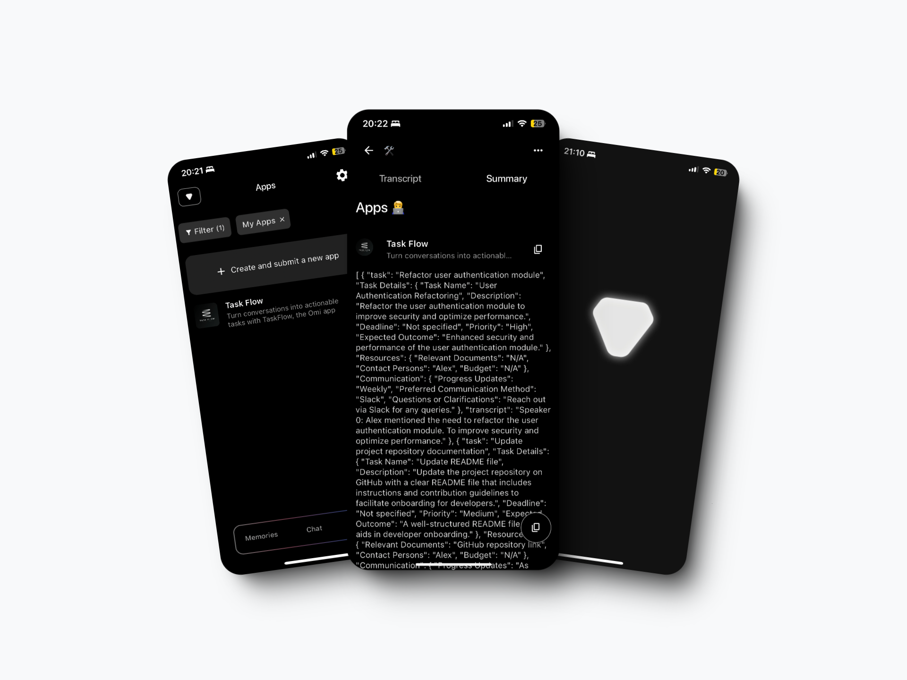

Task Flow
(Voice 2 Tasks)
(Voice 2 Tasks)
Turn conversations into actionable tasks with TaskFlow, the Omi app extension that listens,
extracts, and structures tasks in JSON format. Say goodbye to the hassle of starting Omi task management integrations
from scratch—TaskFlow empowers Omi developers to seamlessly connect tasks to platforms like Notion,
Trello, and more. Simplify workflows, save time, and enhance productivity today!
